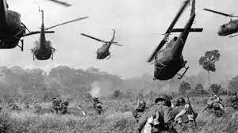
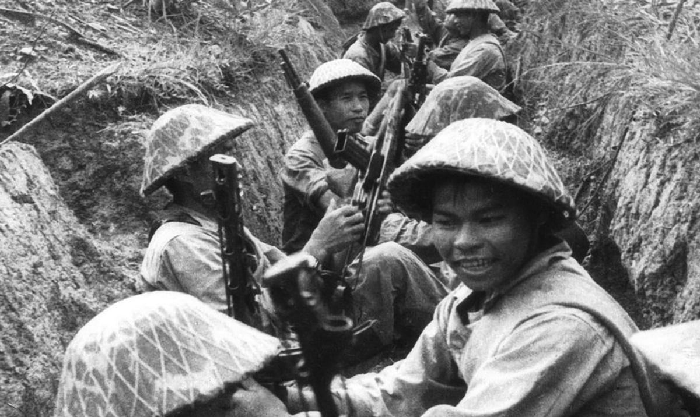

W latach trzydziestych XX wieku przewagę w wietnamskim ruchu wyzwoleńczym, którego działania wymierzone były przeciwko francuskim władzom kolonialnym, zdobyli komuniści. W latach okupacji japońskiej powstał na tym obszarze kierowany przez komunistów ruch partyzancki Viet Minh, a w grudniu 1944 roku z połączenia oddziałów partyzanckich utworzona została Wietnamska Armia Ludowa, na której czele stanął Vo Nguyen Giap. 13 sierpnia 1945 roku wybuchło antyjapońskie powstanie narodowe, zaś 2 września Ho Chí Minh proklamował powstanie Demokratycznej Republiki Wietnamu. Francja nie miała jednak zamiaru rezygnować z imperium kolonialnego w Indochinach. W wyniku kilkuletniej (1946–1954), krwawej wojny, znanej jako I wojna indochińska, Francja – po klęsce pod dien Bien Phu – postanowiła podpisać traktat pokojowy z komunistami i wycofać się z północnego Wietnamu. Skończyło się na zawarciu zawieszenia broni.
Na mocy porozumień genewskich z 1954 roku Wietnam został tymczasowo podzielony wzdłuż 17. równoleżnika[5]. Na północy powstało komunistyczne państwo pod nazwą Demokratyczna Republika Wietnamu (DRW), a na południu niekomunistyczne państwo pod nazwą Republika Wietnamu (RW) pod rządami marionetkowego cesarza B?o Đ?ia, którego w 1956 roku odsunął od władzy jego premier Ngô Đ?nh Di?m, stając się prezydentem z woli Amerykanów[6]. Oddziały Wietnamskiej Armii Ludowej (WAL) wycofały się na północ, a bojownicy Vi?t Minhu na południu przeszli do konspiracji. O dalszych losach całego kraju miały, zgodnie z postanowieniami konferencji, zadecydować przeprowadzone w przyszłości (1956) wolne wybory.
W 1951 ze względów taktycznych rozwiązano Komunistyczną Partię Indochin. Na jej miejsce utworzono Wietnamską Partię Pracujących (Lao Đ?ng). Miało to sugerować, że wietnamscy komuniści nie roszczą sobie pretensji do opanowania pozostałych krajów dawnych Indochin Francuskich: Laosu i Kambodży. W Laosie i Kambodży utworzono formalnie niezależne, lecz kontrolowane wówczas przez Wietnamczyków organizacje komunistyczne: Ludowo-Rewolucyjną Partię Kampuczy oraz Pathet Lao (później także Laotańską Partię Ludową)[8]. Działalność tych grup przyczyniła się do przeniesienia wojny również na tamte kraje (Konflikt laotański).


|